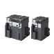

Building Automation
Industrial Automation
Power Automation & Safety


Bangladesh Distributor
Servomotors / Servo Drivers
Servomotors and Servo Drivers are provided for the purpose from replacing stepping motors to high-speed, high-precision control. Models with MECHATROLINK II communications are also provided. Concerning Servomotors/Servo Drivers, OMRON offers different products in different areas. So please click on the banner "Products links" in the top right corner to reach the country website nearest you.
| Overview | Features |
| Principles | Classifications |
| Engineering Data | Further Information |
Related Contents
- Servomotors / Servo Drivers
Servo Motor Selection Flow Chart
| Explanation | References |
| Determine the size, mass, coefficient of friction, and external forces of all the moving part of the Servo Motor the rotation of which affects. | --- |
| Determine the operating pattern (relationship between time and speed) of each part that must be controlled. Convert the operating pattern of each controlled element into the motor shaft operating pattern. | Operation Pattern Formula |
| The elements of the machine can be separated so that inertia can be calculated for each part that moves as the Servo Motor rotates. Calculate the inertia applied to each element to calculate the total load inertia of the motor shaft conversion value. | Inertia Formulas |
| Calculation of Friction Torque Calculates the frictional force for each element, where necessary, and converts it to friction torque for a motor shaft. Calculation of External Torque Calculates the external force for each element, where necessary, and converts it to external torque of a motor shaft. Calculates the total load torque for the motor shaft conversion value. | Load Torque Formulas |
| Select a motor temporarily based upon the motor shaft converted load inertia, friction torque, external torque and r.p.m of a motor. | --- |
| Calculate the Acceleration/Deceleration Torque from the Load Inertia or Operating Pattern. | Acceleration/Deceleration Torque Formulas |
| Calculate the necessary torque for each part of the Operating Pattern from the Friction Torque, External Torque and Acceleration/Deceleration Torque. Confirm that the maximum value for the Torque for each operating part (Maximum Momentary Torque) is less than the Maximum Momentary Torque of the motor. Calculate the Effective Torque from the Torque for each Operating part, and confirm that it is less than the Rated Torque for the motor. | Calculation of Maximum Momentary Torque, Effective Torque |
| Calculate Regenerative Energy from the Torque of all the moving parts. | Please see the user manual of each productfor the details on calculation of the regenerative energy. |
| Check if the the number of encoder pulses meets the system specified resolution. | Accuracy of Positioning |
| Check if the calculation meets the specifications of the temporarily selected motor. If not, change the temporarily selected motor and re-calculate it. | The following table |
| Specialized Check Items | Check Items |
| Load Inertia | Load Inertia ≤ Motor Rotor Inertia x Applicable Inertia Ratio |
| Effective Torque | Effective Torque < Motor Rated Torque Please allow a margin of about 20%. * |
| Maximum Momentary Torque | Maximum Momentary Torque < Motor Maximum Momentary Torque Please allow a margin of about 20%. * For the motor Maximum Momentary Torque, use the value that is combined with a driver and the one of the motor itself. |
| Maximum Rotation Speed | Maximum Rotation Speed ≤ Rated Rotation Speed of a motor Try to get as close to the motor's rated rotations as possible. It will increase the operating efficiency of a motor. For the formula, please see "Straight-line Speed and Motor Rotation Speed". |
| Regenerative Energy | Regenerative Energy ≤ Regenerative Energy Absorption of a motor When the Regenerative Energy is large, connect a Regenerative Energy Absorption Resistance to increase the Absorption capacity of the driver. |
| Encoder Resolution | Ensure that the Encoder Resolution meets the system specifications. |
| Characteristics of a Positioner | Check if the Pulse Frequency does not exceed the Maximum Response Frequency or Maximum Command Frequency of a Positioner. |
| Operating Conditions | Ensure that values of the ambient operating temperature/humidity, operating atmosphere, shock and vibrations meet the product specifications. |
*When handling vertical loads and a load affected by the external torque, allow for about 30% of capacity.
Formulas
Formulas for Operating Patterns
Inertia Formulas
Load Torque Formulas
Acceleration/Deceleration Torque Formula
Calculation of Maximum Momentary Torque, Effective Torque
Positioning Accuracy
Straight Line Speed and Motor Rotation Speed
Sample Calculations
(1) Machinery Selection
(2) Determining Operating Pattern
(3) Calculation of Motor Shaft Conversion Load Inertia
(4) Load Torque Calculation
(5) Calculation of Rotation Speed
(6) Motor Temporary Selection [In case OMNUC U Series Servo Motor is temporarily selected]
*Note that this value changes according to the Series.
(7) Calculation of Acceleration/Deceleration Torque
(8) Calculation of Maximum Momentary Torque, Effective Torque
(9) Result of Examination
Note:This example omits calculations for the regenerative energy, operating conditions, or positioner characteristics.
Recommended Products
 CS1W-NC[]71
CS1W-NC[]71
Decrease TCO with Simple Operation, Reduced Wiring, Batch Settings, and Batch Management
CJ2
Introducing the Flagship CJ2 CPU Units, with Built-in Multifunctional Ethernet Port.
CJ2M-MD21[]
Pulse I/O Modules expand the applicable positioning applications. Easily execute the position control of up to four axes.